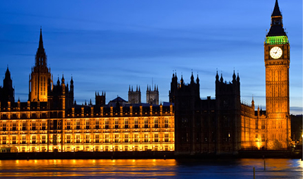

London is a leading global city. It is the world's largest financial centre alongside New York, and is home to the headquarters of more than 100 of Europe's 500 largest companies. It has the most international visitors of any city in the world. The World Nuclear Association Symposium will be held at Central Hall Westminster. Many of London’s top attractions lie only a short distance from here, such as Trafalgar Square, the National Gallery, Piccadilly Circus, Leicester Square, Buckingham Palace and St. James’s Park. The location is also within London’s “theatreland” and close to many of the capital’s best pubs, clubs, restaurants and shops.
